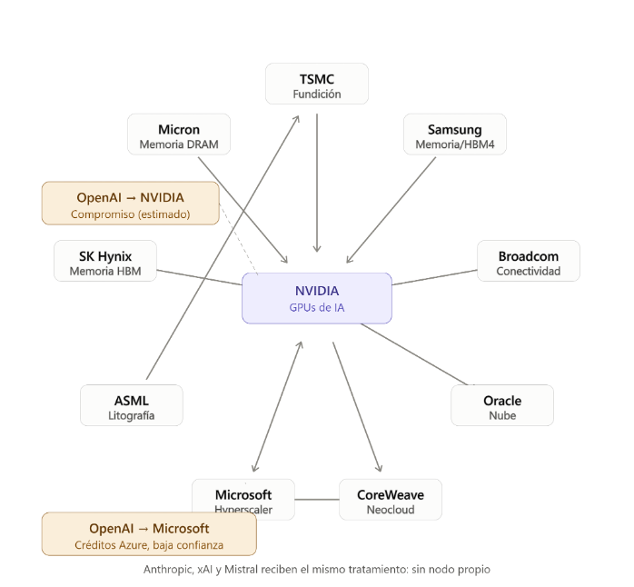

Señal
¿Qué tipos de relación aportan mayor información?
Modelado funcional de la propagación de shocks en redes de dependencias empresariales mediante relaciones estructurales y atención sobre grafos.
Semiconductores, infraestructura de IA y dependencias económicas.
Una perturbación puede viajar hacia clientes, proveedores y socios con intensidades diferentes.
La estructura de las dependencias también forma parte del problema.
Comparar la intensidad aprendida con pesos estructurales fijos y un modelo sin red.
¿Qué tipos de relación aportan mayor información?
¿Cómo cambian los pesos entre períodos normales y anormales?
¿Qué ocurre ante errores u omisiones en la topología?
Determinar si la intensidad de las relaciones debe fijarse estructuralmente o puede aprenderse a partir de evidencia observada.
Solo el origen recibe el shock.
La estructura financiera determina la intensidad.
Se propone aprender la intensidad de las relaciones.
Tres líneas de trabajo sostienen la propuesta.
Acemoglu et al.: topología input-output y cascadas indirectas.
Barrot y Sauvagnat: shocks de proveedores y especificidad de insumos.
Cohen y Frazzini: difusión gradual entre firmas conectadas.
Los retornos pueden aportar una señal observable.
GCN: agregación de vecinos. GAT: importancias diferenciadas.
Feng et al.: relaciones entre acciones para ranking bursátil.
G = (V, E, L) · Empresas públicas, relaciones dirigidas y tipos de dependencia.
Ventas asociadas a la contraparte: Vᵢⱼ.
Participación accionaria relevante: Eⱼᵢ.
Infraestructura o colateral asociado: Gᵢⱼ.
Cada nodo incluye ingresos Iᵢ, capitalización Mᵢ y deuda Dᵢ. La disponibilidad de datos es desigual.
Semiconductores e infraestructura de inteligencia artificial.

Una combinación convexa de tres dimensiones normalizadas.
Los pesos suman uno. Son hipótesis iniciales de modelado, pendientes de validación.
Mismo grafo, pesos, shock e iteraciones → mismo resultado.
pasoPropagacion :: GrafoAI
→ MatrizRelaciones
→ EstadoImpacto
→ EstadoImpactoFunciones puras, estados inmutables y composición. Hughes aporta el fundamento de modularidad.
El esquema acumula aportes en cada paso; no impone conservación ni convergencia.
Elegí un origen, compará con el modelo sin red y avanzá por iteraciones.
Fuentes públicas, programáticas y reproducibles.
Estados trimestrales y anuales. SEC EDGAR para compañías estadounidenses; cobertura a resolver para otras jurisdicciones.
Precios diarios: Stooq o Yahoo Finance según condiciones de uso.
Referencia sectorial propuesta: SOX.
02 de febrero de 2026: revisión pública de expectativas sobre precios de memoria, según el documento base.
La fecha y la fuente primaria del evento deben documentarse antes de la evaluación empírica.
MacKinlay: ventanas, retorno esperado y retorno anormal.
El CAR permite comparar el impacto relativo simulado. Noticias concurrentes pueden contaminar la ventana.
La atención asigna importancias diferentes a los vecinos durante la agregación.
Extensiones propuestas: atributos de arista o atención específica por capa.
Hay que fijar la orientación de la vecindad y la normalización para mantener coherencia con la propagación entrante.
En el Haskell actual, la atención delega en los pesos fijos. El entrenamiento todavía no está implementado.
Minimizar la discrepancia entre el impacto simulado y la respuesta del estudio de eventos.
Impacto normalizado obtenido mediante la propagación.
Transformación normalizada del CAR observado.
La normalización y el entrenamiento se ajustan con los datos de entrenamiento, respetando la partición temporal.
La propagación recibe pesos y devuelve un estado nuevo, sin conocer cómo se obtuvieron.
Tipos algebraicos y registros para empresas, relaciones, confianza y eventos.
Grafo como mapa de adyacencia inmutable.
La misma transición admite pesos estructurales o coeficientes aprendidos.
La evolución se expresa como un plegado sobre los pasos.
Cada paso produce un nuevo mapa. Las entradas definen exactamente la corrida.
Esta disciplina facilita las pruebas del núcleo.
La reproducibilidad también puede lograrse con otros paradigmas; la implementación funcional explicita esta disciplina por construcción.
Distinguir capacidad descriptiva, capacidad predictiva y robustez.
Partición cronológica estricta. El evento ancla es una primera validación; no alcanza para sostener que los pesos aprendidos generalizan.
Comparación propuesta: M0 → M1 → M2. Evaluar si incorporar la red y aprender los pesos reduce el error respecto del baseline.
Comparar impacto normalizado y CAR normalizado, y someter el resultado a pruebas de robustez.
| Dimensión | Métrica o prueba | Qué evalúa |
|---|---|---|
| Ajuste | MAE y RMSE | Correspondencia cuantitativa |
| Dirección | Exactitud de signo / balanced accuracy | Sentido del impacto |
| Orden relativo | Correlación de Spearman | Ranking por intensidad |
| Ablación | Eliminar capas comercial, capital o colateral | Señal incremental de cada capa |
| Topología | Eliminar o perturbar aristas | Sensibilidad a errores y omisiones |
| Temporal | Ventanas alternativas y partición cronológica | Estabilidad y riesgo de fuga de información |
El resultado actual es la formalización reproducible del experimento y la implementación del núcleo funcional.
Baseline sin red, cálculo de Rᵢⱼ, matriz de relaciones, propagación por pasos y funciones básicas de estudio de eventos.
Atención: firma definida, con placeholder que usa el peso estructural.
Dataset: valores de desarrollo, aún sin observaciones auditadas.
Todavía no corresponde reportar superioridad de M2 ni comparar errores de los tres modelos.
El prototipo demuestra la viabilidad de la arquitectura; la pregunta de investigación sigue abierta.
Automatizar extracción y armonización financiera. Construir un conjunto de múltiples eventos.
Calibrar retornos esperados en la ventana de estimación. Implementar y entrenar la GAT.
Ablaciones por capa, perturbaciones de topología y variantes con retardos y decaimiento.
Un núcleo funcional reproducible permite comparar hipótesis de propagación sobre una misma red.
Las empresas forman redes de dependencias.
Los shocks pueden alcanzar nodos indirectamente conectados.
La utilidad de aprender los pesos debe demostrarse con múltiples eventos y datos verificables.
Discusión · ¿Qué evidencia haría convincente la comparación?